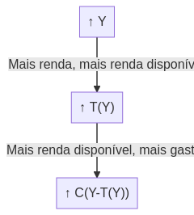
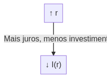
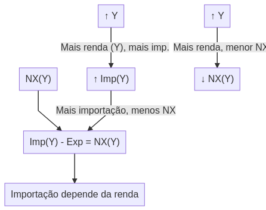
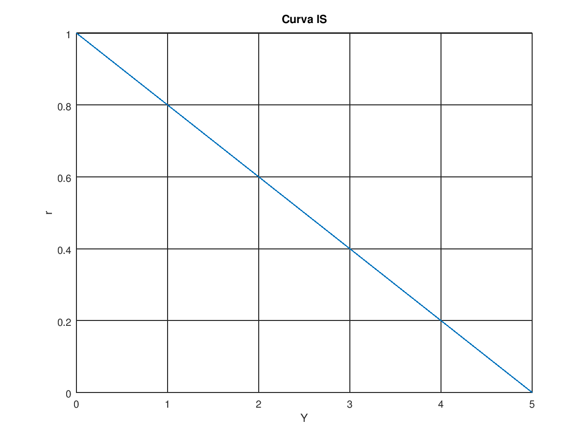
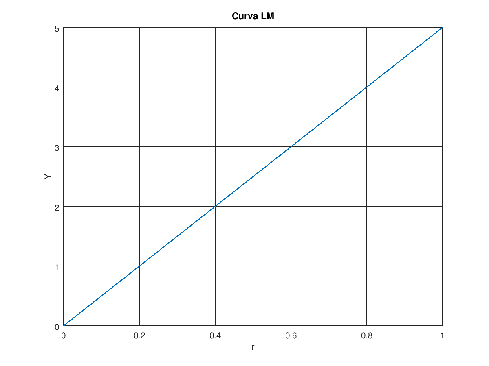
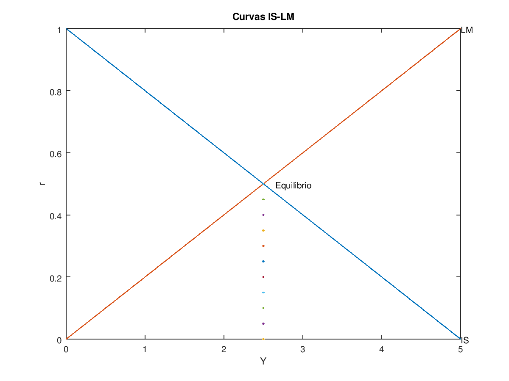

index
Table of Contents
1 Projeto final de economia
- Definição do trabalho: https://drive.google.com/file/d/1xHk0kU3wm7U_EXZcgkRQkXjlPoGgnsK2/view
- Auxílio de tomada de decisões financeiras
- Aprenda os relacionamentos para melhores decições
2 DONE Planejamento do trabalho
2.1 A ideia do trabalho é demonstrar por meio de uma interface interações sobre um modelo economico
- Formatar a ideia
- Pesquisar sobre o modelo
- Encontrar uma ferramenta de visualização
- Pensar em formas de visualizar a interação
- Preparar uma estrutura do modelo em código que permita uma certa interação nas variáveis
2.2 Usando o modelo IS LN
- Quais as variáveis do modelo?
- Como elas interagem?
- Quais operações são possíveis de se realizar como um governo?
- Quais repercuções de cada possível ação?
- Como resolver problemas?
2.3 Ideia
- Gráfico interativo para visualização de interações
3 DONE Resultado final da implementação do gráfico interativo [6/6]
Para desenvolver o gráfico interativo as simulações criadas com octave foram transformadas em Typescript para serem renderizadas pelo navegador.
Checklist da implementação
[X]Converter funções do octave para Javascript / Typescript[X]Criar tipo Vector e operações necessárias para implementar as funções criadas no octave[X]Vector[X]Mapeamento de vetor[X]Subtração
[X]Encontrar uma biblioteca para plot e adicionar em gráfico as funções[X]Criar interatividade no gráfico[X]Definir as constantes usando um Observable[X]Criar os controles para alterar as constantes[X]Atualizar o gráfico a cada mudança nas constantes
[X]Formatar a UI[X]Formatar o código final
A seguir o resultado a implementação:
4 DONE Revisão [5/5]
[X]Revisar o modelo IS LM[X]Organizar as equações e variáveis exógenas[X]Entender a relação das variáveis nas curvas- Montar diagramas
[X]Adicionar exemplos (plot) das curvas com octave[X]IS[X]LM
[X]Plot do gráfico da IS e LM com octave mascando o ponto de igualdade
4.1 DONE Modelo IS LM
O Modelo IS/LM, Modelo Keynesiano Generalizado (MKG), ou ainda Modelo Hicks-Hansen, é um instrumento para fins de análise macroeconómica de âmbito didático, cuja representação num espaço cartesiano procura ilustrar os pares ordenados de taxa de juro nominal e renda, em que temos equilíbrio de curto prazo no Mercado de Bens e Serviços e no Mercado Monetário económico, é uma formalização matemática iniciada por John Richard Hicks baseada largamente na teoria de John Maynard Keynes. A sigla IS/LM do modelo provém do inglês Investment Saving / Liquidity preference Money supply. A extensão do modelo IS/LM para uma economia aberta é conhecida por IS/LM/BP ou Modelo Mundell-Fleming.

Figure 1: Gráfico das cusrvas IS LN do modelo: disponível em https://en.wikipedia.org/wiki/IS%E2%80%93LM_model
Equação
\(Y = C(Yd) + I(Y, r) + G + NX( )\)
Ou ainda:
\(Y - C(Yd) - G = I(Y, r) + NX( )\)
Onde:
| Variável | Descrição |
|---|---|
| \(Y\) | Renda Agregada |
| \(C\) | Consumo das famílias |
| \(Yd\) | Renda Disponível(ou seja, a diferença entre a renda agregada e a massa de impostos T = t.Y) |
| \(I\) | Investimento Agregado |
| \(r\) ou \(i\) | Taxa de juros |
| \(G\) | Dispêndios do Governo |
| \(NX( )\) | Saldo em Conta Corrente e/ou a Tranferência Líquida de Recursos Não-Fatores ao Exterior |
| \(S\) ou \(Y - C - G\) | Savings: \(Y - G - C(Y - T(Y))\) ou seja, a Renda total menos Gastos menos Consumo (que varia de acordo com os tributos) |
The model is presented as a graph of two intersecting lines in the first quadrant.
O gráfico do equilíbrio no modelo IS-LM tem Y na abscissa e i nas cordenadas onde i é a taxa de juros e Y o produto.
- IS se trata de uma curva negativamente inclinada;
- LM ao contrário, uma curva positivamente inclinada;
4.1.1 IS a curva Investment-Savings
For the investment-saving curve, the independent variable is the interest rate. Ela representa todos os pontos onde:
\(S = I\)
Savings = Investimentos. A equação da curva também pode ser representada de forma expandida:
\(S = I\)
\(Y - G - C = I + NX\)
\(Y - G - C(Y - T(Y)) = I(r) + NX(Y)\)
Ou ainda:
\(Y - C(Y - T(Y)) + I(r) + G + NX(Y) = 0\)
Para as análises do modelo IS / LN, por ter o mercado fechado, \(NX = 0\):
\(Y - G - C(Y - T(Y)) = I(r)\)
Onde:
| Valor | Representa | |
|---|---|---|
| \(C(Y-T(Y))\) | Consumer spending as an increasing function of disposable income | Quanto mais renda, mais renda disponível, mais gasto |
| \(I(r)\) | Investimento, decrescente com a taxa real de juros | Quanto mais jutos, menos investimento |
| \(G\) | Government spending | Não depende de outras variáveis |
| \(NX(Y) = 0\) | Net exports (exports minus imports) decreasing function of income | Quanto mais Renda, menor NX, pois importação é crescente com renda |
Considerando que as seguintes variáveis são exógenas:
| Variável | Descrição |
|---|---|
| \(C\) | consumption |
| \(G\) | government spending |
| \(EX\) | exports |
| \(IM\) | imports |
| \(Rt\) | real interest rate |
E assim sendo, fazem parte das formas de interação com o modelo.
4.1.2 Relações entre as variáveis do modelo:
- Gasto do consumidor
Valor Representa \(C(Y-T(Y))\) Consumer spending as an increasing function of disposable income Quanto mais renda, mais renda disponível, mais gasto 
- Investment
Valor Representa \(I(r)\) Investimento, decrescente com a taxa real de juros Quanto mais jutos, menos investimento 
- Net Exports
Valor Representa \(NX(Y)\) Net exports (exports minus imports) decreasing function of income Quanto mais Renda, menor NX, pois importação é crescente com renda 
4.1.3 LM - The liquidity preference and money supply curve
A curva LM é gerada com dado a Renda Y que infere a taxa de juros r
The LM function is the set of equilibrium points between the liquidity preference (or demand for money) function and the money supply function (as determined by banks and central banks).
Each point on the LM curve reflects a particular equilibrium situation in the money market equilibrium diagram, based on a particular level of income. In the money market equilibrium diagram, the liquidity preference function is simply the willingness to hold cash balances instead of securities. For this function, the nominal interest rate (on the vertical axis) is plotted against the quantity of cash balances (or liquidity), on the horizontal. The liquidity preference function is downward sloping. Two basic elements determine the quantity of cash balances demanded (liquidity preference) and therefore the position and slope of the function:
\(M / P = L(i, Y)\)
Onde:
| Variável | Descrição | |
|---|---|---|
| \(M\) | Nominal Money Supply | |
| \(P\) | Price level | |
| \(M / P\) | Real Money Supply | |
| \(i\) ou \(r\) | Taxa de juros - interest | |
| \(Y\) | Renda | |
| \(L\) | real demand for money |
\(M / P = L(r, Y)\)
\(Y -> L(r, Y) - M/P\)
4.2 DONE Representando o modelo IS LM - Visualização das equações com Octave [3/3]
[X]Representar a curva IS[X]Representar a curva LM[X]Representar as curvas IS e LM definindo o equilíbrio
4.2.1 Representando a curva IS:
\(Y - G - C(Y - T(Y)) = I(r)\)
1; clear;
#Helpers
fixOrigin = @(i) i - min(i);
normalizeRate = @(i) i / max(i);
fixedRate = @(i) normalizeRate(fixOrigin(i))
#IS Equations
investment = @(r) -r;
tributes = @(y) y / 10;
availableIncome = @(y) y - tributes(y);
consumption = @(y) availableIncome(y) / 2;
interestFromIvestment = @(i) 1 - fixedRate(i);
G = 2;
Y = 0:0.1:5;
IR = interestFromIvestment((Y - G - consumption(Y)));
hf = figure(1, "visible", "off");
plot(Y, IR);
xlabel ("Y");
ylabel ("r");
title ("Curva IS");
grid on;
print(hf, "./tmp/is_plot.png", "-dpng");
ans = "./tmp/is_plot.png";

4.2.2 Representando a curva LM:
\(M / P = L(r, Y)\)
1; clear;
#LM Equations
market = @(r) 2 + (5 * r);
MbP = 2;
R = 0:0.01:1
Y = market(R) - MbP;
hf = figure(1, "visible", "off");
plot(R, Y);
xlabel ("r");
ylabel ("Y");
title ("Curva LM");
grid on;
print(hf, "./tmp/lm_plot.png", "-dpng");
ans = "./tmp/lm_plot.png";

4.2.3 Representando a igualdade nas equações
1; clear;
#Contants
#Helpers
fixOrigin = @(i) i - min(i);
normalizeRate = @(i) i / max(i);
fixedRate = @(i) normalizeRate(fixOrigin(i))
#IS Equations
investment = @(r) -r;
tributes = @(y) y / 10;
availableIncome = @(y) y - tributes(y);
consumption = @(y) availableIncome(y) / 2;
interestFromIvestment = @(i) fixedRate(i);
#LM Equations
market = @(r) 2 + (5 * r);
#IS
G = 2;
IsY = 0:0.1:5;
IsR = interestFromIvestment(investment(IsY - G - consumption(IsY)));
#LM
MbP = 2;
LmR = 0:0.01:1
LmY = market(LmR) - MbP;
#IS Plot
hf = figure(1, "visible", "off");
plot(IsY, IsR);
text(IsY(end), IsR(end), "IS");
#find((IsY == LmY) == (IsR == LmR));
#plot(round(IsY) == round(LmY));
#plot(round(IsR) == round(LmR));
#), "IS");
#LM Plot
hold on;
plot(LmY, LmR);
text(LmY(end), LmR(end), "LM");
#Format
hold on;
plot(2.5, 0:0.05:0.5)
text(2.65, 0.5, "Equilibrio");
title("Curvas IS-LM");
xlabel("Y");
ylabel("r");
#grid on;
ans = "./tmp/is_lm_plot.png"; print(hf, ans, "-dpng");
